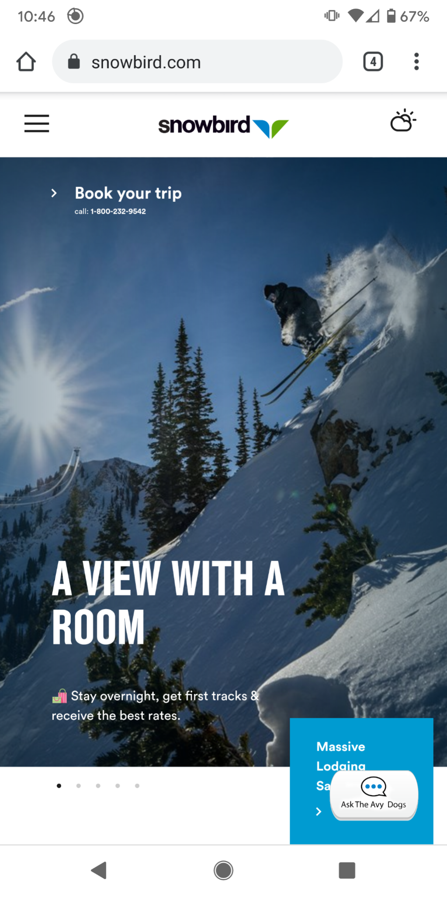

White Space and Clean Design
DJI Website: https://dji.com
This is a very clean design. There is a great amount of white space on the home page which draws your attention to the main product. There is also a convenient "Learn More" button front and center. A clean design can be a very powerful design tool.
PARC: Proximity
Snowbird Website: https://snowbird.com
What stood out to me in this example was proximity. There is a good use of white space around the skier. The text is down to the left and below the skier giving your eyes plenty of time to easily make it's way down the page. With the help of some very good alignment and spacing this page makes you want to book your next ski trip.
Fitt's Law
Gimp Website: https://gimp.org
Not only does this site look good for both the mobile experience and the full size browser windows but it is a good example of Fitt's law. There is a beatiful image in the center that grabs your attention and the button to download the app is directly beneath it. The design makes it so easy!